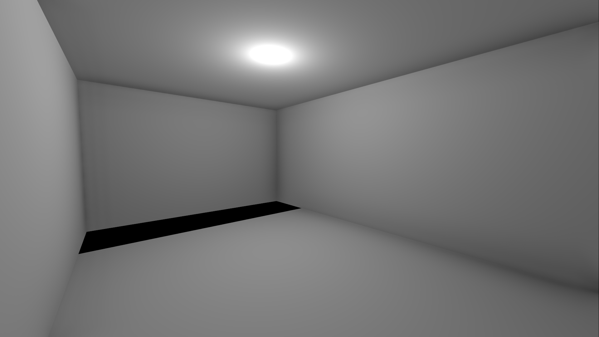

I am not too sure what this game should be yet.
I've recently played Quake so I really want to add a fun combat system but maybe not too FPS focused.
Not long ago I started to think that implementing my own physics (even just simple axis-aligned stuff) is pointless and basically just a distraction from actually making a game.
I also didn't want to implement lighting and shadow maps from scratch for the same reason so I started using R3D for that.
At this point I thought that I might as well just use a full engine and Godot is by far my favorite.
Everything is much more convenient and I can actually focus on what features I want to add.
At first I wanted this to be a factory game (I still think that this might be a good idea, I'm just not sure how to implement it yet).
A roguelike/roguelite but with more stuff to do than just combat could be fun.
I'm not sure why but when I get bored I get a lot of ideas that seem extremely cool but then, the next day, they stop being so vivid.
For example even what I'm writing right now might look like it could've been worded better the next day.
I think the advantage of this is that I basically start thinking in a slightly different way, which could be almost like someone else is giving me feedback or advice.
Or it might just lead to procrastination if I don't actually take action.
I think I prefer the former.

This is an image of the cell that the player is in which, for now, I call "the dungeon". I will expand the story later.
I've made it intentionally simple and the only things that seems a bit less boring is the rectangular hole on the other side of the cell.
By jumping in that hole the player will be teleported into a larger area where there are multiple options. I'll elaborate on this later.
Copyright © VladiConcept